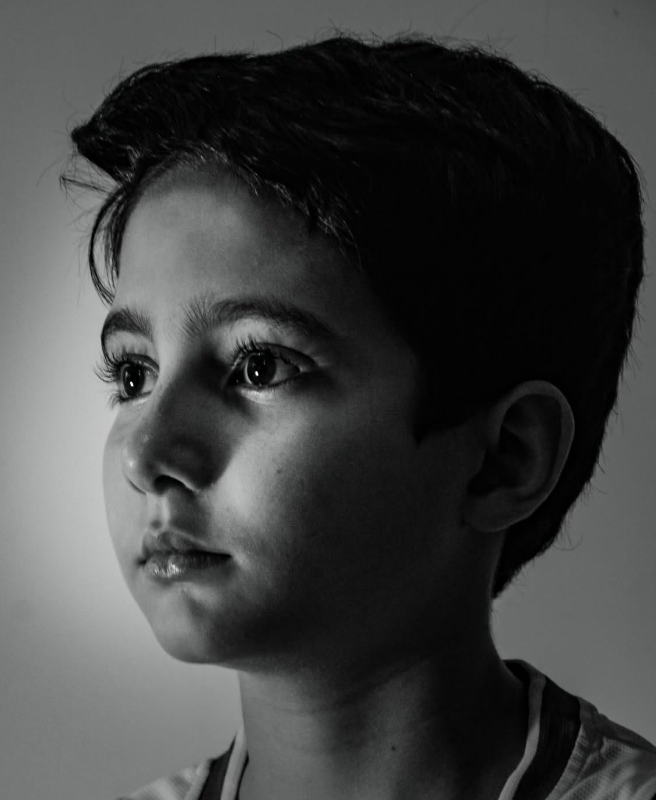
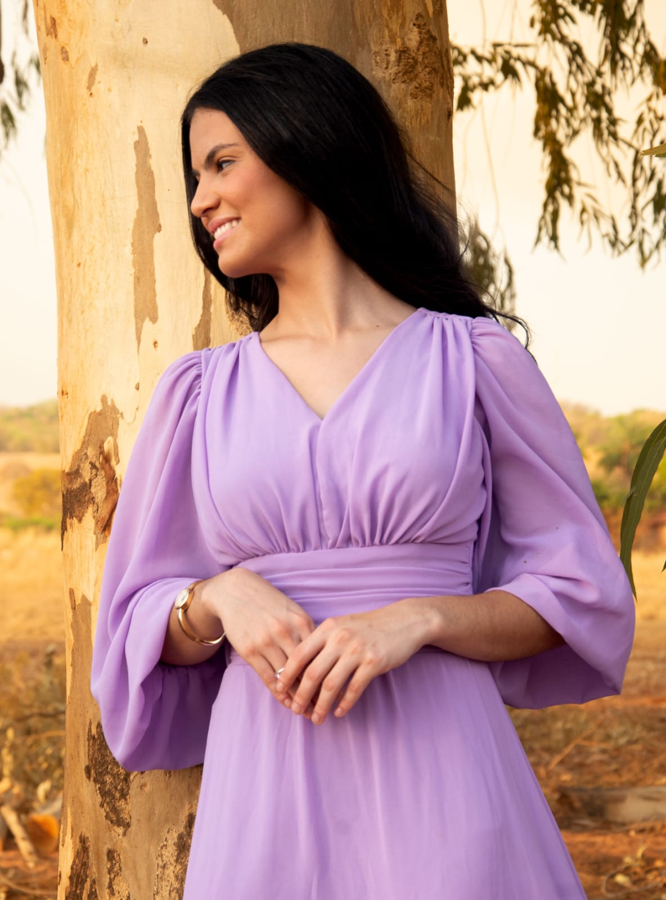
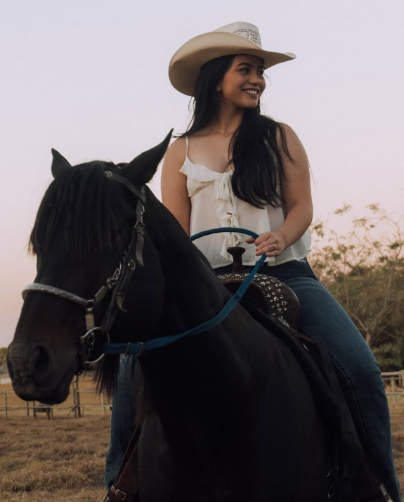
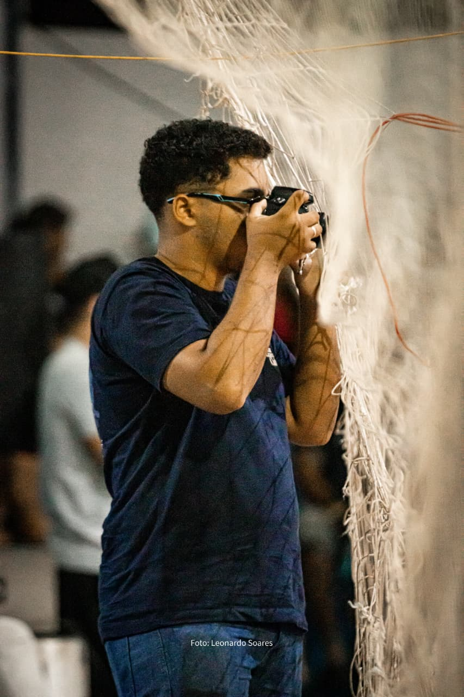

A.S.A Studio
Fotografia por
Arthur
Descobrir
Alguns dos meus trabalhos
02 Por trás da câmera

Fotógrafo & editor
Arthur,
A.S.A Studio.
Retratos
Ensaios
Esporte
Edição
03 Contato
Uma boa fotografia começa com conversa.